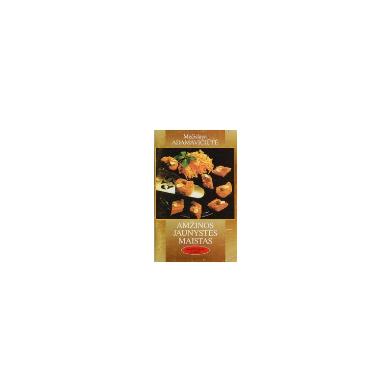

Welcome to tinkamos mitybos maistas
Maisto piramidė - tinkamos mitybos pagrindas kiekvieną dieną - Sveikas Maistas - 2020
2020.10.30 03:10 Pagrindinis Vaistas Ligų Ir Būsenų, Plastinė Operacija Narkotikai Alternatyvioji Medicina Odontologija Pagrindinis Vaistas Ligų Ir Būsenų, Medicininis Turizmas Vizija Vyras Sveikata Papildus Ir Vitaminus Pagrindinis Papildus Ir Vitaminus Moterų Sveikata Klausymas Ligų Ir Būsenų, Plastinė Operacija Aknė „Adlens“, taškai: atsiliepimai, tipai ir funkcijos. Adlens akiniai: oftalmologų atsiliepimai 2019 Ar medus padidina ar sumažina kraujospūdį? Naudingos savybės ir kontraindikacijos 2019 Liaudies gynimo priemonės viduriavimui vaikams: ryžių vanduo, mėtų ir ramunė, ąžuolo žievė. Tradicinės medicinos receptai 2019 Sveikas Maistas
Maisto piramidė - tinkamos mitybos pagrindas kiekvieną dieną - Sveikas Maistas - 2020
2019 Pagrindinis Sveikas Maistas Maisto piramidė - tinkamos mitybos pagrindas kiekvieną dieną - Sveikas Maistas - 2020Maisto piramidė yra savotiška sveikos mitybos principų schema. Jį sukūrė Harvardo visuomenės sveikatos mokykla. Amerikos mitybos specialistų pasiūlytą maisto piramidę patvirtino Rusijos Federacijos mitybos instituto ekspertai. Jei naudosite siūlomą schemą, jūsų kūnas gaus visus reikiamus komponentus, vitaminus, augalinius pluoštus ir riebalų rūgštis iš suvartojamo maisto, išvengsite didelio kaloringumo maisto.
doktov, o ne per daug svorio.
Kaip atrodo maisto piramidė?
Schema, tai yra lygiašalis trikampis, kuris yra padalintas į keturias grindis horizontaliosiomis linijomis. Piramidinių grindų aukštis yra maždaug toks pat. Kuo mažesnis grindys, tuo daugiau šios grupės produktų turėtų būti ant jūsų stalo. Ir, atvirkščiai, viršutiniame lygmenyje yra tie produktai, kurie turėtų būti valgomi kiek įmanoma mažiau.
1 aukštas (piramidės pagrindas). Čia yra javų grūdų produktai - duona, pagaminta iš ruginių miltų, makaronų, rudųjų ryžių ir kitų grūdų (grikių, avižinių, kukurūzų, miežių). Porcijų skaičius per dieną - nuo 6 iki 11. Šios grupės produktai turėtų būti jūsų mitybos pagrindas, jie turi daug mitybos skaidulų ir suteikia organizmui energijos sandėlį. Rafinuotas miltų duona neįeina į šią grupę, ji yra viršutiniame piramidės aukšte su saldumynais ir riebalais. Anksčiau bulvės buvo įtrauktos į šią grupę, dabar jos buvo perkeltos į viršutinę stadiją dėl didelio krakmolo kiekio, kuris prisideda prie svorio padidėjimo.
2 aukštas. Jis yra padalintas tarp daržovių ir vaisių. Dėl dienos turėtų valgyti 2-4 porcijas vaisių ir 3-5 porcijas daržovių. Į kasdienį mitybą įskaičiuokite įvairius vaisius ir daržoves, pageidautina skirtingomis spalvomis. Jūsų meniu turi būti oranžinės, raudonos, geltonos ir žalios spalvos vaisiai. Sušaldyti maisto produktai gali pakeisti šviežius, jei jie tinkamai virti. Vietoj vaisių ir daržovių, galite naudoti jų pakaitalus - natūralias vaisių sultis, taip pat džiovintus vaisius.
3 aukštas. Tai apima baltymų maisto produktus (mėsą, riešutus, žuvį, sėklas, kiaušinius ir ankštinius augalus). Jie turėtų būti valgomi 2-3 porcijas per dieną. Tuo pačiu lygmeniu yra ir pieno produktų (varškės, sūrių, jogurto, kefyro), rekomenduojama kasdienis porcijų skaičius yra 2-3. Turėtumėte pasirinkti liesą mėsą, paukščius be odos, jūros žuvį (ji turėtų būti įtraukta į dietą kelis kartus per savaitę). Tačiau pramoniniai pusgaminiai, dešros, šoninė turėtų būti riboti.
4 aukštas. Tai apima riebalus (sviestą ir augalinį aliejų), saldainius, pyragus, sodas ir desertus. Jie veltui viršuje, jų skaičius meniu turėtų būti minimalus. Kūnas negali daryti be riebalinių produktų, jie būtini biocheminių reakcijų ir vitaminų sintezei. Pirmenybė turėtų būti teikiama natūraliems augaliniams aliejams - alyvuogių, kukurūzų, sėmenų, saulėgrąžų.
Maisto piramidės procentinė dalis yra tokia: pirmojo aukšto produktai - 40% dienos raciono, antrasis - 35%, trečiasis - 20%, o ketvirtas - 5%.
Kas yra tinkama mityba kiekvieną dieną? Tai yra keletas produktų iš žemesnio lygio, 5 porcijos daržovių ir vaisių, 2-3 porcijos baltymų turinčių produktų.
Kas yra tarnauja?
Tai įprastas vienetas, kurio dydis pasirinktas individualiai, atsižvelgiant į asmens energijos poreikius. Jei vartojate 100 gramų porcijos, jūsų meniu turi turėti tokį santykį: 700 g grūdų ir 300 g duonos, 400 g daržovių ir 300 g vaisių, 150 g mėsos, žuvies, sūrio, 2-3 kiaušinių. Jei dalis laikoma 70 gramų, visų produktų kiekis atitinkamai sumažėja.
Jei norite sumažinti savo svorį, tada maisto piramidė yra puikus modelis subalansuotai mitybai, reikia sumažinti tik porcijų dydį. Ir žmonėms, užsiimantiems intensyviu fiziniu darbu, produktų skaičius turi būti padidintas, pavyzdžiui, vienam porcijai, o ne 200 gramų, bet 200.
Jei norite prailginti savo gyvenimą ir pasilikti sveikas, kol senatvėje, jūs turėtumėte atsižvelgti į sveikos mitybos principus, įtraukti įvairius maisto produktus iš visų mitybos piramidės lygių. Svarbus dalykas, padedantis pailginti gyvenimą, yra vidutinio sunkumo fizinis aktyvumas, taip pat pakankamas vandens kiekis - 8 stiklai per dieną vidutiniam asmeniui.
Rekomenduojama Redaktoriaus Pasirinkimas Alternatyvioji MedicinaKas padeda „Turboslim“ (arbata)? Vartotojų atsiliepimai, indikacijos ir dozavimas
2020-10-30 Sveikas MaistasPažiūrėkime, kokių vaisių galite valgyti slaugos mama
2020-10-30 Žmonės Su NegaliaDejerin-Klumpke paralyžių naujagimiams ypatumai
2020-10-30 NarkotikaiGydymas pankreatitu: vaistų ir liaudies gynimo priemonės
2020-10-30 Ligų Ir Būsenų,Gydomoji schistosomazė: gydymas, diagnozė, simptomai
2020-10-30 VaistasGeriausias Maskvos endokrinologas: atsiliepimai
2020-10-30 RekomenduojamaKur padaryti ultragarso Maskvoje. Klinikų apžvalgos
2020-10-30„Potencialūs Forte“: atsiliepimai, kainos, instrukcija
2020-10-30Kas yra sirupas, kosulio sirupas?
2020-10-30Manijos asmenybės sutrikimai
2020-10-30 Populiarios TemosNutukimo mitas, kurį reikia nustoti tikėti
2020-10-30Kas yra geriausia užpildymo medžiaga?
2020-10-30Išangės uždegimas: priežastys, gydymas, prevencija, poveikis
2020-10-30Prietaisas „Union-Apollo“: prostatito gydymo efektyvumo apžvalgos, nurodymai
2020-10-30Copyright 2020.
